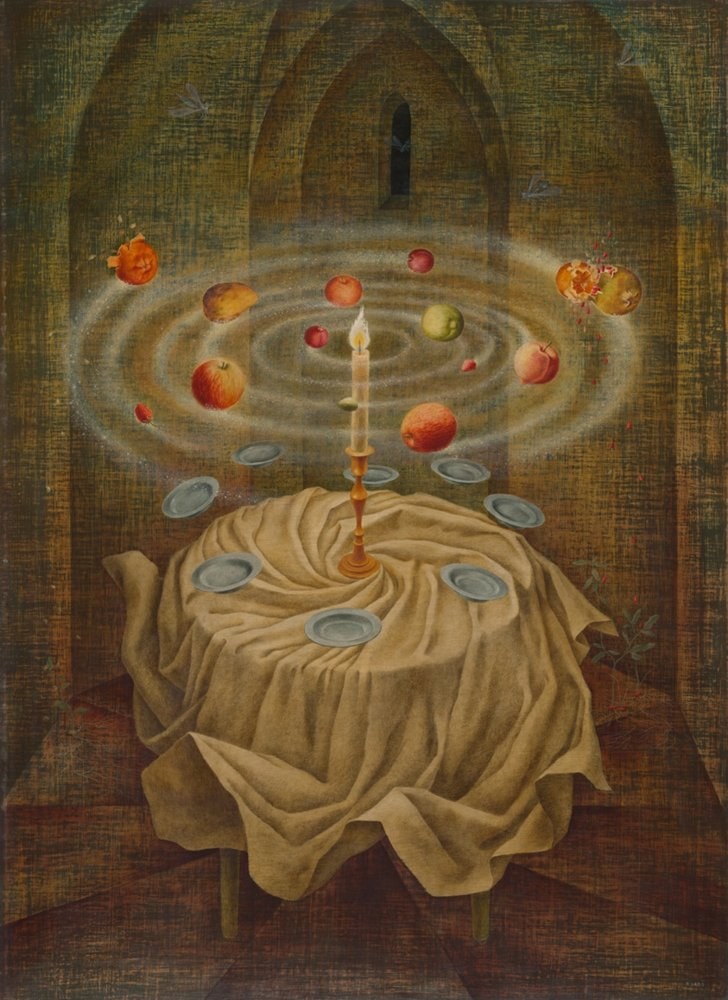

Still Life Reviving (Naturaleza muerta resucitando)
Remedios Varo · 1963 · Oil on canvas · 109.9 × 80.1 cm · Art Institute of Chicago
In copyright. Look and learn: shown for study, not for download.
This was Remedios Varo's last finished painting. She completed it in 1963 and died of a heart attack on 8 October that year, aged fifty-four. She had fled Paris for Mexico when the Nazis arrived in 1940 and never returned to Spain; only in 1952, after marrying Walter Gruen, did she give up commercial design to paint full time. The canvas went from Gruen to her family in Valencia, sold at Sotheby's in New York in 1994, and came to the Art Institute in 2024.